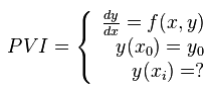

C6_U6: 6.Solución de ecuaciones diferenciales.
6.1 Métodos de un paso.
* Método de Euler:
El método de Euler, Es un procedimiento de integración numérica para resolver ecuaciones diferenciales ordinarias a partir de un valor inicial dado.
El método de Euler es un método de primer orden, lo que significa que el error local es proporcional al cuadrado del tamaño del paso, y el error global es proporcional al tamaño del paso. El método de Euler regularmente sirve como base para construir métodos más complejos.
El método de Euler es el más simple de los métodos numéricos resolver un problema del siguiente tipo:

* Método de Runge-kutta:
Es un método genérico de resolución genérica de ecuaciones diferenciales. Son un conjunto de métodos iterativos (explícitos e implícitos) para la aproximación de soluciones de ecuaciones diferenciales ordinarias, concretamente del problema de valor inicial.
Sea y´(t) = f(t,y(t)).
Una ecuación diferencial ordinaria, con f:Ω CRxR´´→R´´, Donde omega es un conjunto abierto, junto con la condición de que el valor inicial de “f” sea (t0,y0)εΩ Entonces el método Rk (de orden s) tiene la siguiente expresión, en su forma más general.
* Metodo de Taylor:
El método de Taylor es uno de los algoritmos más antiguos para aproximar la solución de un problema de valor inicial en una ecuación diferencial ordinaria. En muchos libros de cálculo numérico aparece como una de las primeras opciones para integrar numéricamente las soluciones, pero es inmediatamente descartado alegando las dificultades en su implementación: el cálculo de las derivadas de la ecuación diferencial y el coste de su evaluación posterior. Sin embargo, hay alternativas al cálculo clásico de derivadas. Nos centraremos en la llamada diferenciación automática, que no calcula una expresión para las derivadas sino que da un algoritmo para su evaluación. En la charla discutiremos las posibilidades de este método para la integración efectiva de ecuaciones diferenciales. Veremos que, combinado con la diferenciación automática, el método de Taylor se convierte en un método muy eficiente y preciso que puede competir con los métodos clásicos (de un paso) de integración. En particular, parece ser la mejor opción cuando se requiere un alto grado de precisión. Finalmente, presentaremos un programa de dominio público que genera automáticamente el integrador de Taylor (incluyendo rutinas de control de orden y paso) para una ecuación dada.
6.2 Método de pasos múltiples.
Se considera el problema de valores iniciales (P.V.I.) 8< x1 < < xN = b; los métodos que hemos visto hasta aquí sólo usan la información del valor yi de la solución calculada en xi para obtener yi+1. Por eso se denominan métodos de paso simple. Parece razonable pensar que también podrían utilizarse los valores yi. Para ello, si integramos y0(x) = f(x; y(x)) en el intervalo [xi; xi+1], se tiene: Z xi+1 xi y0(x) dx = Z xi+1 xi f(x; y(x)).Los métodos de un paso descritos en las secciones anteriores utilizan información en un solo punto xi para predecir un valor de la variable dependiente yi+1 en un punto futuro xi+1. Procedimientos alternativos, llamados métodos multipaso, se basan en el conocimiento de que una vez empezado el cálculo, se tiene información valiosa de los puntos anteriores y esta a nuestra disposición. La curvatura de las líneas que conectan esos valores previos proporciona información con respecto a la trayectoria de la solución. Los métodos multipaso que exploraremos aprovechan esta información para resolver las EDO. Antes de describir las versiones de orden superior, presentaremos un método simple de segundo orden que sirve para demostrar las características generales de los procedimientos multipaso
6.3 Sistemas de ecuaciones diferenciales ordinarias.
Un sistema de ecuaciones diferenciales es un conjunto de varias ecuaciones diferenciales con varias funciones incógnitas y un conjunto de condiciones de contorno. Una solución del mismo es un conjunto de funciones diferenciables que satisfacen todas y cada una de las ecuaciones del sistema. Según el tipo de ecuaciones diferenciales puede tenerse un sistema de ecuaciones diferenciales ordinarias o un sistema de ecuaciones en derivadas parciales. En un sistema de ecuaciones diferenciales ordinarias de cualquier orden, puede ser reducido a un sistema equivalente de primer orden, si se introducen nuevas variables y ecuaciones. Por esa razón en este artículo sólo se consideran sistemas de ecuaciones de primer orden.
6.4 Aplicaciones.
* Aplicación en el teorema de L´Hopital
* Uso de las series de Fourier en el procesamiento digital de señales
* Uso de las series de Taylor y Maclaurin en la aproximación del valor de una función en un punto en términos del valor de la función y sus derivadas en otro punto.
* Estimación de integrales
* Determinación de convergencia y divergencia de series.
* Las ED son de gran importancia en varias áreas de conocimiento, como Fisica, Química, Economía, Ingeniería, Medicina; por la posibilidad de representar fenómenos mediante modelos matemáticos, a saber: crecimiento de poblaciones Una sola ecuación diferencial puede servir como modelo matemático de distintos fenómenos como el movimiento de una mesa unida a un resorte o un circuito eléctrico en serie son idénticos a los que se emplean en un sistema vibratorio de resorte y masa.
* Las formas de las ecuaciones diferenciales de segundo orden surgen en el análisis de problemas en muchas y diversas áreas de la ciencia y la ingeniería.